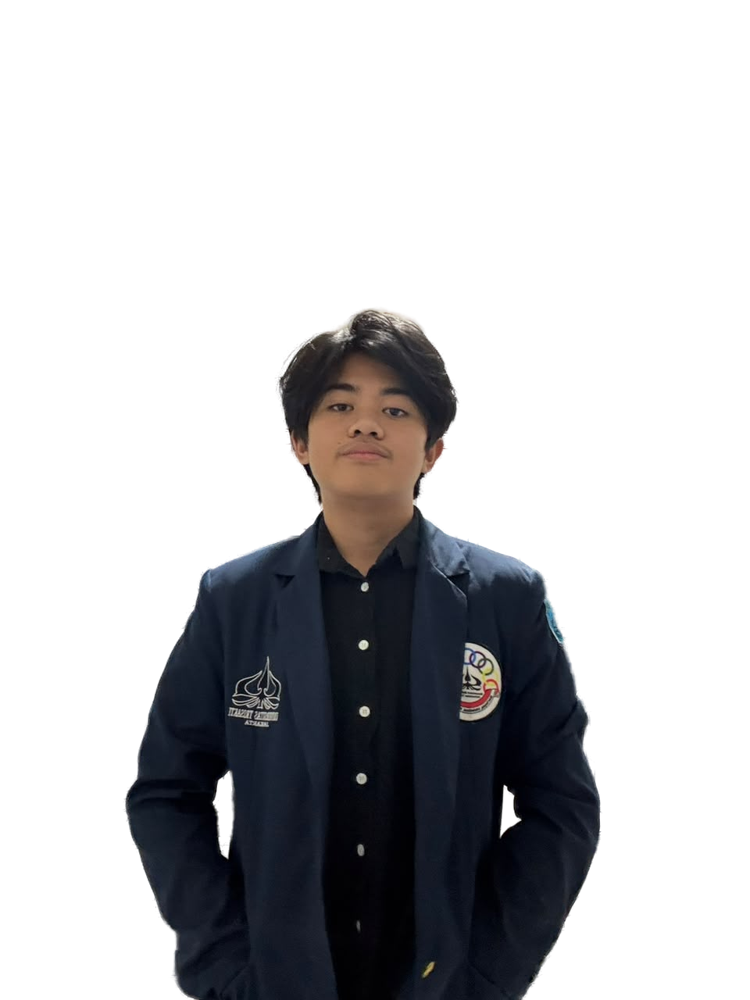

HELLO, SAYA
Sabian
Abhista.
Web Developer &
Creative Thinker
Turning ideas into
meaningful experiences.

A little
about me.
Saya membangun pengalaman digital yang fungsional, intuitif, dan punya cerita. Senang mengeksplorasi teknologi dan mengubah ide menjadi karya nyata.
Jelajahi karya sayaTOOLKIT⚛ ReactTS TypeScript≈ Tailwind CSS⌘ Python◇ Git & GitHub◉ Figma
TENTANG SAYA
Rasa ingin tahu.
Ide yang tumbuh.
Karya yang bermakna.
LAYANAN
Ide Anda, saya wujudkan.
Dari konsep hingga layar.
Solusi digital yang dirancang dengan hati.
KEAHLIAN
Tools di balik
setiap karya.
Terus belajar, terus bereksperimen.
Teknologi berikut menemani proses kreatif saya.
PENGALAMAN
Setiap langkah,
sebuah pelajaran.
Bertumbuh lewat kolaborasi, tantangan,
dan pengalaman di dunia nyata.
PRESTASI & SERTIFIKASI
Milestone kecil, semangat besar.
SELECTED WORKS
Dibuat dengan sepenuh hati.
Beberapa ide yang berhasil
menemukan bentuknya.
Frieren Showcase dapat dikunjungi melalui Live Demo. Kartu berlabel Konsep merupakan contoh isi portfolio.
DI BALIK LAYAR
Bukan cuma tentang kode.
Momen, orang-orang, dan cerita
yang membuat perjalanan ini berwarna.
LET'S CONNECT
Punya ide?
Mari buat
jadi nyata.
Punya proyek menarik, peluang kolaborasi,
atau sekadar ingin menyapa? Saya siap mendengar.